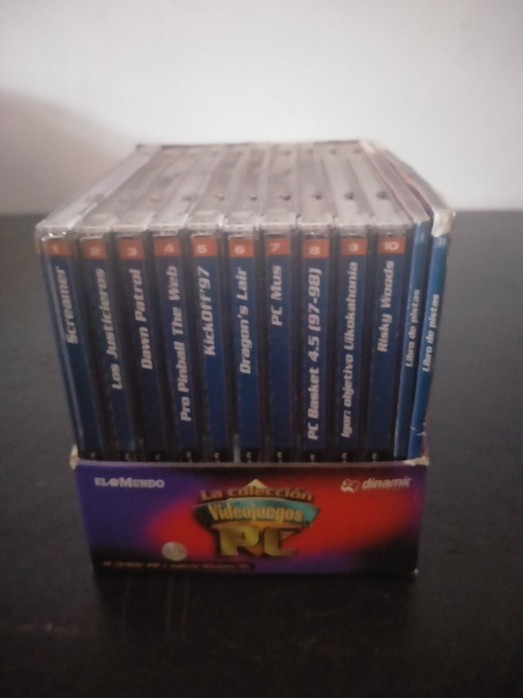

Ficha #000000
La colección de Videojuegos para PC
Colección española distribuida por el diario El Mundo en colaboración con Dinamic Multimedia durante la segunda mitad de los años noventa. Reúne diez videojuegos completos en CD-ROM, presentados individualmente en cajas jewel case numeradas: Screamer, Los Justicieros, Dawn Patrol, Pro Pinball: The Web, Kick Off 97, Dragon's Lair, PC Mus, PC Basket 4.5 (97-98), Igor: Objetivo Uikokahonia y Risky Woods. Su catálogo combina producciones internacionales y títulos vinculados a la industria española, abarcando carreras arcade, aventura gráfica, simulación aérea, pinball, deportes, cartas y plataformas. La edición constituye un ejemplo representativo de las colecciones de quiosco que facilitaron el acceso del público generalista español al videojuego físico de PC.
- Formato
- Jewel Case
- Plataforma
- MsDos Win95
- Género
- Compilación Carreras Aventura gráfica Shooter sobre raíles Simulación aérea Pinball Deportes Juego de cartas Plataformas
- Serie
- Todos Jewel Case Dinamic multimedia
- Desarrollador
- Graffiti, PicMatic, Rowan Software, Cunning Developments, Anco Software, ReadySoft, Círculo, Dinamic Multimedia, Pendulo Studios, Dinamic Software, Zeus Software
- Distribuidor
- Dinamic Multimedia, El Mundo
- EAN
- —
Contenido de la edición
- Caja expositora de cartón
- 10 CD-ROM en cajas jewel case
- Screamer
- Los Justicieros
- Dawn Patrol
- Pro Pinball: The Web
- Kick Off 97
- Dragon's Lair
- PC Mus
- PC Basket 4.5 (97-98)
- Igor: Objetivo Uikokahonia
- Risky Woods
- Libro de pistas I
- Libro de pistas II
Preservación
- Protección
- No determinado
- Formato recomendado
- BIN/CUE
- Jugable en virtualización
- Sí
Preservar cada uno de los diez CD-ROM mediante una imagen individual, preferentemente en formato BIN/CUE, y digitalizar las carátulas, la caja expositora y los dos libros de pistas. La ejecución virtual es viable mediante entornos MS-DOS o Windows 95 según el título concreto.